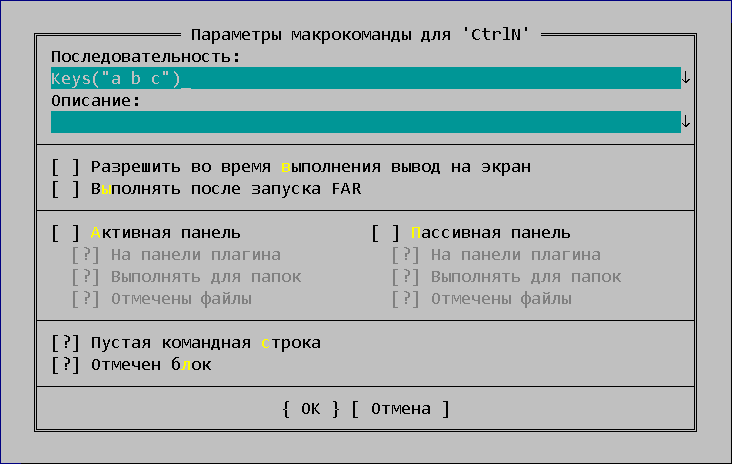
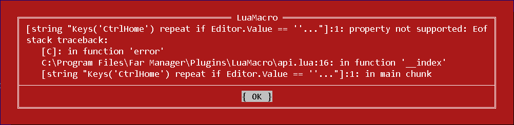

Вариант 1
Можно через плагин S&R заменить пустые строки на пробелы, а потом заменить строки из пробелов на пустые строки с удалением пустых строк.
То есть:
Решение неудобное, т. к. нужно доустанавливать плагин.
Вариант 2
Можно по-быстрому сделать макрос следующего содержания:
CtrlHome
$WHILE (!Eof)
$IF (Editor.Value=="")
CtrlY
$ELSE
Down
$END
$END
Как сделать макрос с кодом в документации не нашел. Возможная последовательность действий:

Примечание. В FAR имеется глюк, при котором данное окно появляться не будет. Нужно несколько раз делать один и тот же макрос, и в какой-то момент (в случае завершения записи макроса клавишами Ctrl+Shift+.) после вопроса о сочетании клавиш, появится данное окно.
Поэтому другой путь - это создать макрос через меню. В редакторе нажимаем F11, выбираем MacroView. Любой макрос можно удалить клавишей «Del», добавить клавишей «Ins» или отредактировать — «Enter». Однако, начиная с какой-то версии FAR, вместо MacroView вставлен MacroBrowser. В нем нет возможности добавить макрос клавишей INS, удалить клавишей DEL. Можно только отредактировать текст макроса клавишей F4, или запустить его клавишей Enter.
Однако, вышеприведенный код макроса не похож на синтаксис последовательности!
UPD: Можно попробовать вставить такой код в поле "Последовательность":
Keys('CtrlHome') repeat if Editor.Value == '' then Keys('CtrlY') else Keys('Down') end until Editor.Eof
или такую:
Keys('CtrlHome') repeat if Editor.Value == '' then Keys('CtrlY') else Keys('Down') end until Object.Eof
Они вроде срабатывают. Но только один раз. Второй раз выдается ошибка или вообще завешивается весь FAR:

Обнаружено, что такой макрос правильно срабатывает один раз сразу после запуска FAR, причем на неотредактированном файле (то есть, после открытия файла в редакторе, нельзя ничего изменять, надо сразу запустить макрос).
Так же обнаружено, что на файлах ~500 строк и выше, макрос завешивает редактор.